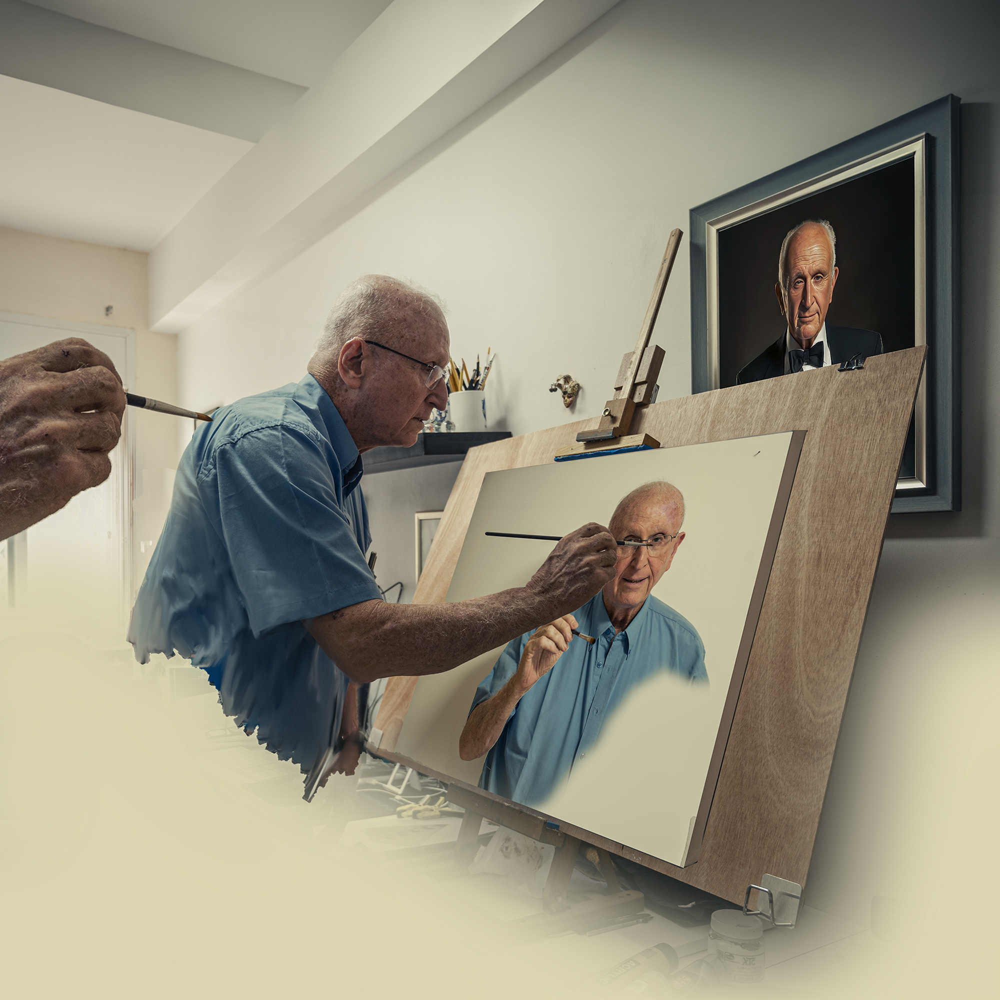
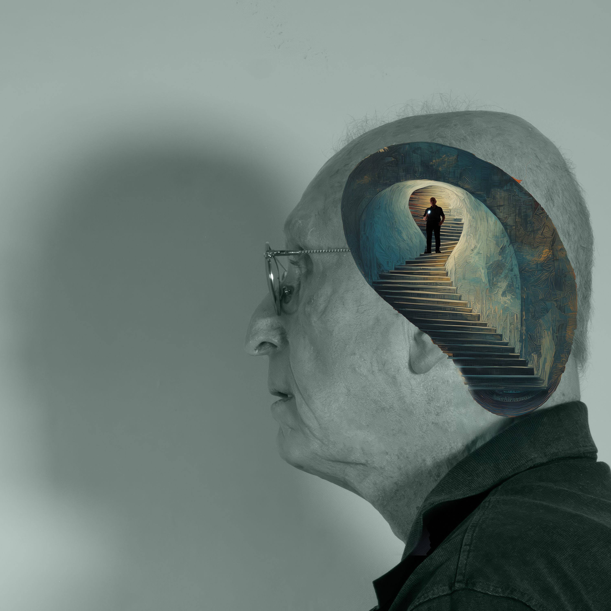
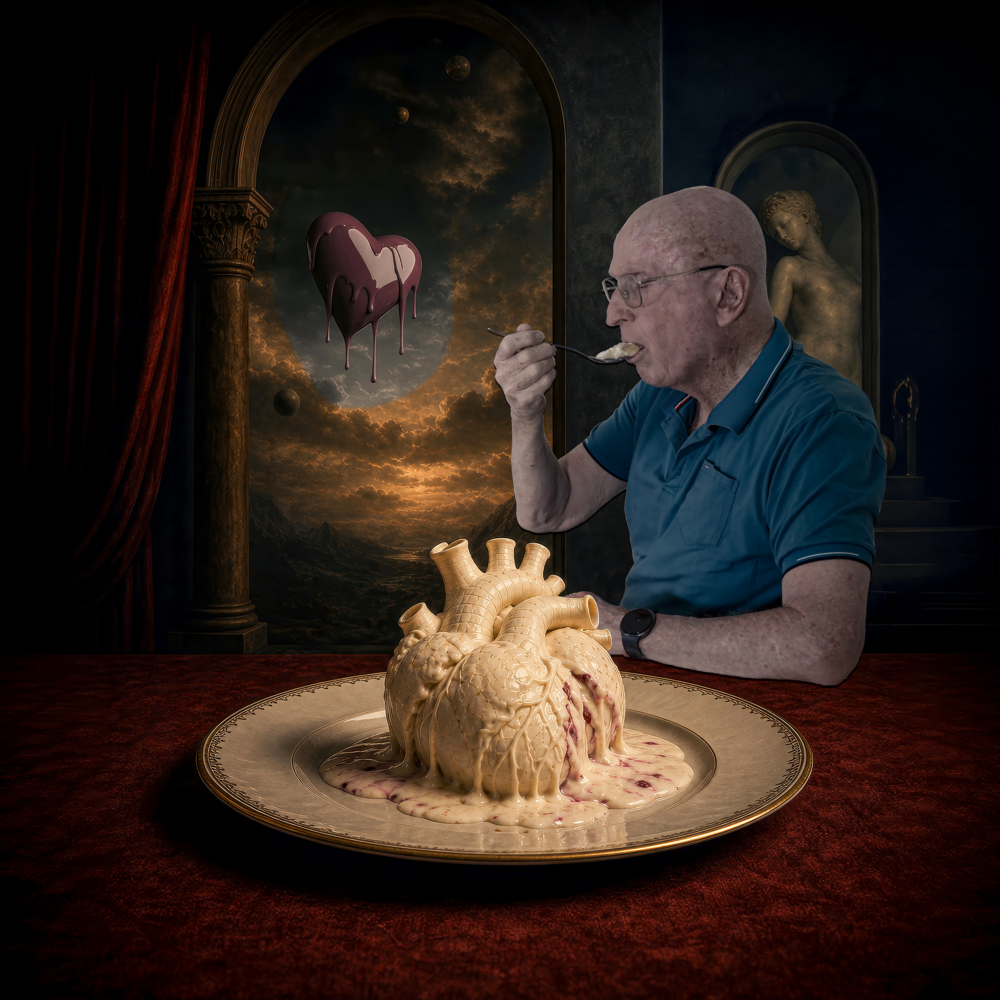

Current Gallery Images
A readable selection for visitors, curators, crawlers, and previews. The full spatial experience remains inside the immersive gallery.





A readable selection for visitors, curators, crawlers, and previews. The full spatial experience remains inside the immersive gallery.


